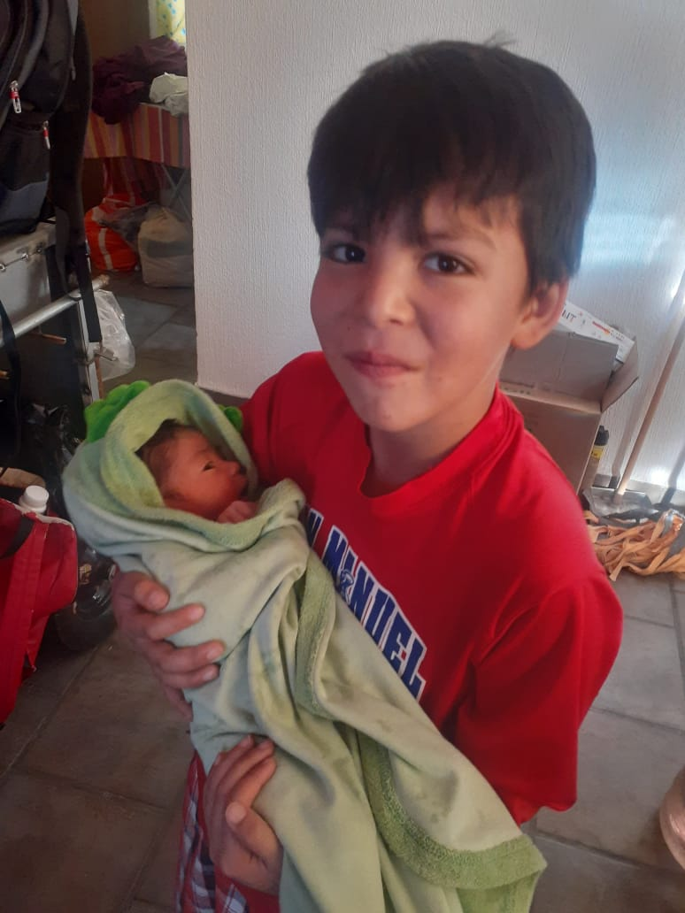

Xavier Salas Gonzalez
Xavier es un niño bastante distraído pero demasiado entusiasta muy cariñoso y juguetón, le gusta el futbol ir al parque y tiene muchos amigos, participa en casa y siempre pelea con sus hermanos, le gusta mucho bailar, cantar y las artes marciales y toca la guitarra, su comida favorita es el espagueti y la piza y el postre que mas le gusta es el arroz con leche no le gusta bañarse ni recoger su cuarto es un poco desordenado con sus útiles escolares y no le gusta el uniforme de su escuela
Descripcion
Datos
Hermano
Edad: 9 años;
Alias: Poy;
Aficiones:
Karate
Skate
Video juegos